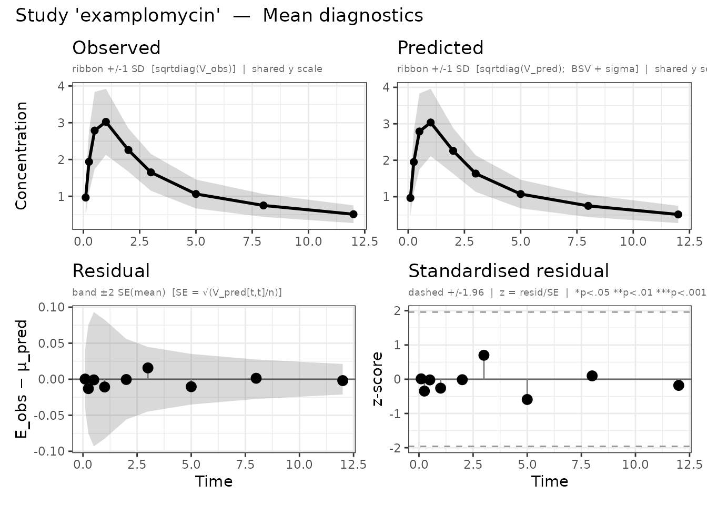

What is aggregate-data modelling?
admixr2 fits pharmacometric PK/PD models to
summary-level data. For each clinical study you
supply:
- E — observed mean vector (one entry per observation time)
- V — observed covariance matrix (or variance vector)
- n — sample size
- times — observation time points
- ev — dosing event table
The estimator matches E and V against their model-predicted counterparts using a Monte Carlo approximation of the population distribution. This lets you apply established nlmixr2 models to aggregate statistics from publications or internal data summaries where individual records are unavailable.
Two backends are available:
| Estimator | est = |
Control function |
|---|---|---|
| Monte Carlo | "admc" |
admControl() |
| Importance Resampling MC | "adirmc" |
adirmcControl() |
The examplomycin dataset
examplomycin ships with admixr2: 500 simulated subjects
from a two-compartment PK model with first-order absorption (100 mg oral
dose, sampled at 0.1, 0.25, 0.5, 1, 2, 3, 5, 8, and 12 h). True
parameters: CL = 5 L/h, V1 = 10 L, V2 = 30 L, Q = 10 L/h, ka = 1 h⁻¹;
IIV = 0.3 (SD on log scale) for all parameters; proportional error SD =
0.2.
library(admixr2)
library(rxode2)
library(nlmixr2)
data("examplomycin")
head(examplomycin[examplomycin$EVID == 0, c("ID", "TIME", "DV")], 9)
#> ID TIME DV
#> 2 460 0.10 0.752
#> 3 460 0.25 1.932
#> 4 460 0.50 3.694
#> 5 460 1.00 3.479
#> 6 460 2.00 4.003
#> 7 460 3.00 3.825
#> 8 460 5.00 1.756
#> 9 460 8.00 1.155
#> 10 460 12.00 0.742Computing aggregate statistics
Reshape individual records into a subjects × times matrix, then compute E and V:
obs <- examplomycin[examplomycin$EVID == 0, ]
obs <- obs[order(obs$ID, obs$TIME), ]
times <- sort(unique(obs$TIME))
ids <- unique(obs$ID)
n <- length(ids) # 500
dv_mat <- matrix(NA_real_, nrow = n, ncol = length(times))
for (i in seq_along(ids)) {
sub <- obs[obs$ID == ids[i], ]
dv_mat[i, ] <- sub$DV[order(sub$TIME)]
}
E <- colMeans(dv_mat)
V <- cov(dv_mat)
round(E, 2)
#> [1] 0.97 1.94 2.79 3.02 2.26 1.65 1.06 0.75 0.51V is the 9×9 sample covariance matrix. Its off-diagonal
entries capture within-subject correlation across time; using the full
matrix (method = "cov") typically tightens parameter
estimates compared to the diagonal-only approximation
(method = "var"). admixr2 auto-detects the
method from the structure of V.
Model definition
Models use standard nlmixr2 syntax with mu-referenced log-scale parameters:
pk_model <- function() {
ini({
tcl <- log(5) ; label("Log clearance (L/hr)")
tv1 <- log(10) ; label("Log central volume (L)")
tv2 <- log(30) ; label("Log peripheral volume (L)")
tq <- log(10) ; label("Log inter-compartmental CL (L/hr)")
tka <- log(1) ; label("Log absorption rate constant (1/hr)")
prop.sd <- c(0, 0.2); label("Proportional residual error SD")
eta.cl ~ 0.09
eta.v1 ~ 0.09
eta.v2 ~ 0.09
eta.q ~ 0.09
eta.ka ~ 0.09
})
model({
cl <- exp(tcl + eta.cl)
v1 <- exp(tv1 + eta.v1)
v2 <- exp(tv2 + eta.v2)
q <- exp(tq + eta.q)
ka <- exp(tka + eta.ka)
d/dt(depot) <- -ka * depot
d/dt(central) <- ka * depot - (cl/v1 + q/v1) * central + (q/v2) * peripheral
d/dt(peripheral) <- (q/v1) * central - (q/v2) * peripheral
cp <- central / v1
cp ~ prop(prop.sd)
})
}Fitting
Pass one or more named studies to admControl():
fit <- nlmixr2(
pk_model, admData(), est = "admc",
control = admControl(
studies = list(examplomycin = study),
n_sim = 5000L,
cov_n_sim = 10000L,
maxeval = 300L,
seed = 1L
)
)
#> [====|====|====|====|====|====|====|====|====|====] 0:00:00
#> [====|====|====|====|====|====|====|====|====|====] 0:00:00
#> [====|====|====|====|====|====|====|====|====|====] 0:00:00
#> [====|====|====|====|====|====|====|====|====|====] 0:00:00
#> [====|====|====|====|====|====|====|====|====|====] 0:00:00
#> [====|====|====|====|====|====|====|====|====|====] 0:00:00
#>
#> [====|====|====|====|====|====|====|====|====|====] 0:00:00
#>
#> [====|====|====|====|====|====|====|====|====|====] 0:00:00
#> [====|====|====|====|====|====|====|====|====|====] 0:00:00
#> [====|====|====|====|====|====|====|====|====|====] 0:00:00
#> [====|====|====|====|====|====|====|====|====|====] 0:00:00
#> [====|====|====|====|====|====|====|====|====|====] 0:00:00
#> [====|====|====|====|====|====|====|====|====|====] 0:00:08Inspecting the fit
print(fit)
#> ── nlmixr² admc ──
#>
#> OBJF AIC BIC Log-likelihood
#> admc -3681.832 -3659.832 -3589.302 1840.916
#>
#> ── Time (sec fit$time): ──
#>
#> optimize covariance elapsed
#> 1 44.407 10.531 54.938
#>
#> ── Population Parameters (fit$parFixed or fit$parFixedDf): ──
#>
#> Parameter Est. SE %RSE
#> tcl Log clearance (L/hr) 1.601 0.01636 1.022
#> tv1 Log central volume (L) 2.315 0.08739 3.776
#> tv2 Log peripheral volume (L) 3.402 0.04014 1.18
#> tq Log inter-compartmental CL (L/hr) 2.284 0.02133 0.9337
#> tka Log absorption rate constant (1/hr) 0.0247 0.08218 332.6
#> prop.sd Proportional residual error SD 0.1986
#> Back-transformed(95%CI) BSV(CV%) Shrink(SD)%
#> tcl 4.958 (4.802, 5.12) 32.8
#> tv1 10.12 (8.529, 12.01) 33.8
#> tv2 30.02 (27.75, 32.48) 32.0
#> tq 9.82 (9.418, 10.24) 33.4
#> tka 1.025 (0.8725, 1.204) 31.2
#> prop.sd 0.1986
#>
#> Covariance Type (fit$covMethod): r
#> No correlations in between subject variability (BSV) matrix
#> Full BSV covariance (fit$omega) or correlation (fit$omegaR; diagonals=SDs)
#> Distribution stats (mean/skewness/kurtosis/p-value) available in fit$shrink
#> Censoring (fit$censInformation): No censoring
#> Minimization message (fit$message):
#> NLOPT_XTOL_REACHED: Optimization stopped because xtol_rel or xtol_abs (above) was reached.Key entries in fit$env$admExtra:
fit$objective # -2 log-likelihood
#> [1] -3681.832
fit$env$admExtra$struct # structural parameters (log scale)
#> tcl tv1 tv2 tq tka
#> 1.60108208 2.31477756 3.40198091 2.28442677 0.02470451
fit$env$admExtra$omega # estimated Omega matrix
#> [,1] [,2] [,3] [,4] [,5]
#> [1,] 0.1023461 0.0000000 0.00000000 0.0000000 0.00000000
#> [2,] 0.0000000 0.1079487 0.00000000 0.0000000 0.00000000
#> [3,] 0.0000000 0.0000000 0.09759912 0.0000000 0.00000000
#> [4,] 0.0000000 0.0000000 0.00000000 0.1057226 0.00000000
#> [5,] 0.0000000 0.0000000 0.00000000 0.0000000 0.09312475
fit$env$admExtra$sigma_var # residual variance(s)
#> prop.sd
#> 0.03945189
logLik(fit)
#> 'log Lik.' 1840.916 (df=11)
AIC(fit)
#> [1] -3659.832Diagnostic plots
plot() produces up to four panel types and returns them
as a named list of ggplot2 objects:

Left: observed vs predicted mean with residuals. Right: NLL convergence trace.

Left: observed vs predicted mean with residuals. Right: NLL convergence trace.
For a detailed walkthrough of all four panel types and customisation
options, see
vignette("diagnostic-plots", package = "admixr2").